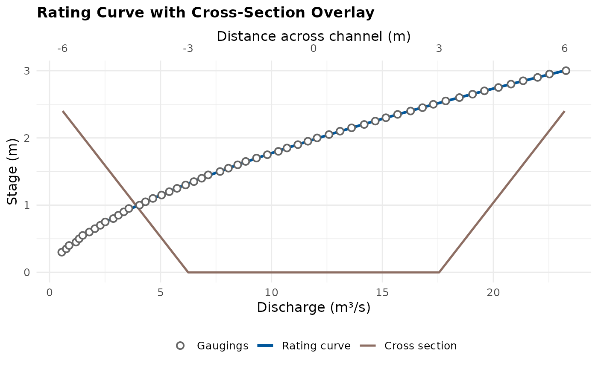

Overlay a surveyed cross-section on a fitted rating's own plot
Source:R/plot_rating_cross_section.R
plot_rating_cross_section.RdRescales a surveyed cross-section's distance onto the discharge axis
of fit's own rating plot, so the channel's shape and the rating's
shape sit on one figure – the same shape-to-exponent link
vignette("n_bounds_guide") draws for idealised controls, but for a
real survey against a real fit. A secondary axis on top gives the true
distance scale back.
This is deliberately narrower than demo_cross_section_rating(),
which builds its own fixed synthetic bed profile and rating purely for
illustration and takes no arguments describing a real station. Reach
for demo_cross_section_rating() to see what such a figure looks
like; reach for this function once you have your own fit and your own
survey.
elevation_col must already be expressed on the same vertical datum
as the gaugings' stage (stage_m) – this function does not convert a
survey's absolute elevation (e.g. metres AOD) onto a gauge's local
datum. Do that conversion (typically subtracting the gauge zero)
before calling this function.
Usage
plot_rating_cross_section(
fit,
cross_section,
distance_col = "distance_m",
elevation_col = "elevation_m",
n_points = 200L
)Arguments
- fit
A FlodeRating, FlodeSegmentedRating, or FlodeRatingTable instance – the same classes
plot_rating_curves()accepts.- cross_section
A data.frame/data.table of surveyed distance/elevation points, at least 2 rows.
- distance_col, elevation_col
Character. Column names in
cross_sectionfor distance across the channel and bed elevation (onstage's own datum – see Description). Default"distance_m"/"elevation_m".- n_points
Integer. Points used to draw the rating curve. Default
200L.
See also
demo_cross_section_rating() for a fixed synthetic
illustration of the same cross-section/rating pairing;
plot_rating_curves(), whose internal curve helper this function
reuses; vignette("n_bounds_guide") for what canonical control
shapes look like and the exponent they imply.
Examples
set.seed(1)
stage_m <- seq(0.3, 3, by = 0.05)
discharge_cms <- 4 * stage_m^1.6 + rnorm(length(stage_m), sd = 0.05)
fit <- rate_optimise(discharge_cms, stage_m)
# A simple trapezoidal survey, already on the gauge's own stage datum
xs <- data.frame(
distance_m = c(-6, -3, 3, 6),
elevation_m = c(2.4, 0, 0, 2.4)
)
plot_rating_cross_section(fit, xs)
